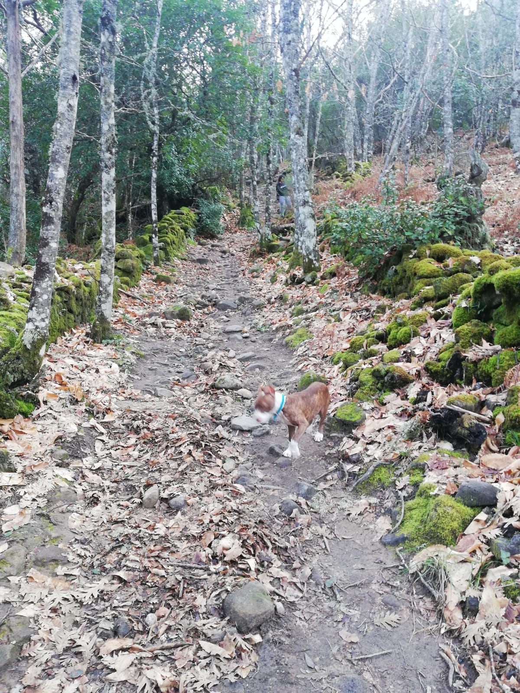
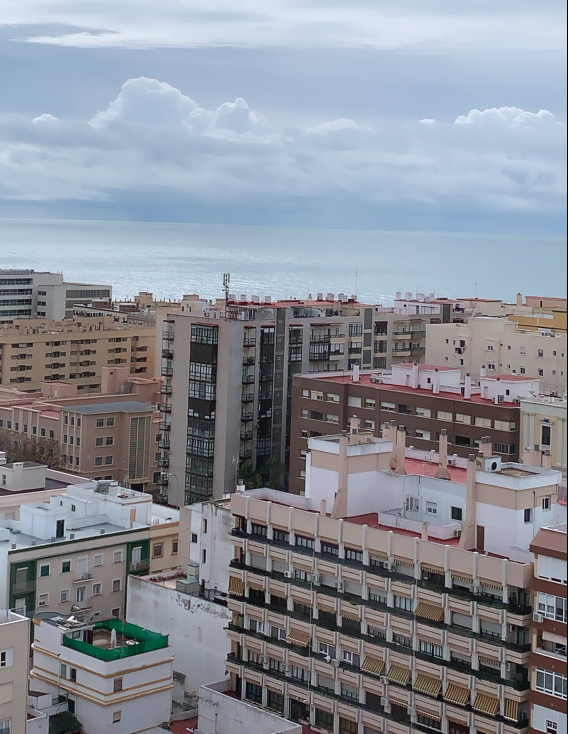
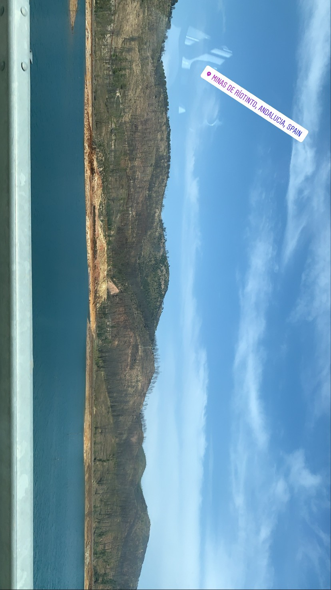
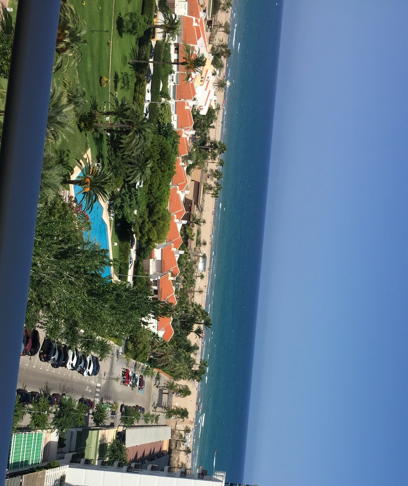

Sheila Francisco González
En la playa buscamos escapar de la rutina, buscamos tostarnos al sol o buscamos refrescarnos con el mar, buscamos ir a nuestro ritmo pero al mismo tiempo siguiendo un poco a los demás, pues es difícil que consigas estar a solas en cualquier playa en esta época del año. Así que si eres una persona que necesita ratos de descanso bajo el sol, sin dejar de relacionarse con los demás y buscando ambientes diferentes, entonces sí: tu destino está en la playa.
Ahora bien, y aquí se entenderá la diferencia de personalidades y deseos, puede que esto no sea lo que buscamos. Puede que lo que necesites en estos momentos sea una verdadera tranquilidad, una auténtica desconexión, paz con uno mismo y paz con el mundo exterior. No encontraremos esto en las concurridas playas, así que toca decantarse por las montañas.
Esta opción empieza a ser la escogida por muchos viajeros que han entendido que el verano no solo está para disfrutar del mar. Hay quien prefiere la montaña, y es lógico, pues en estos meses tendremos otra perspectiva de ésta, que también es muy valiosa. Naturaleza en estado puro, deportes como el senderismo y mucho aire libre. Mucha paz.